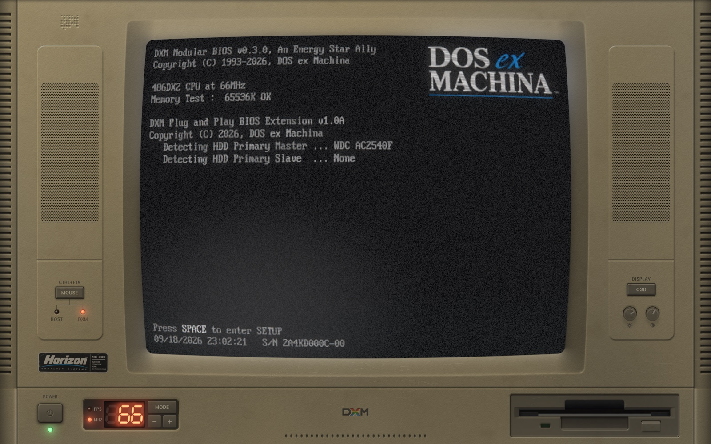
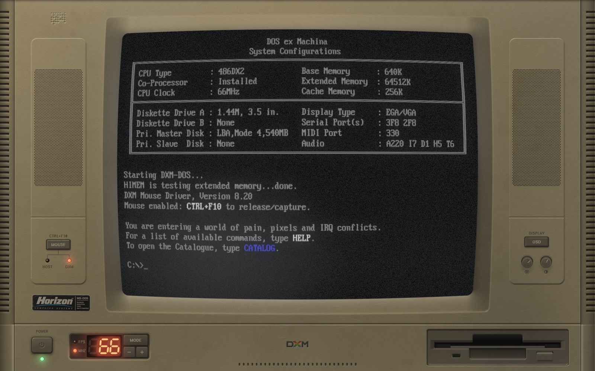
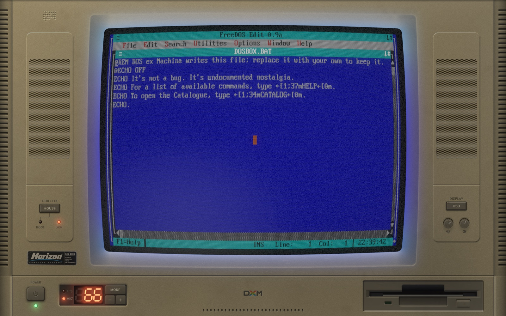
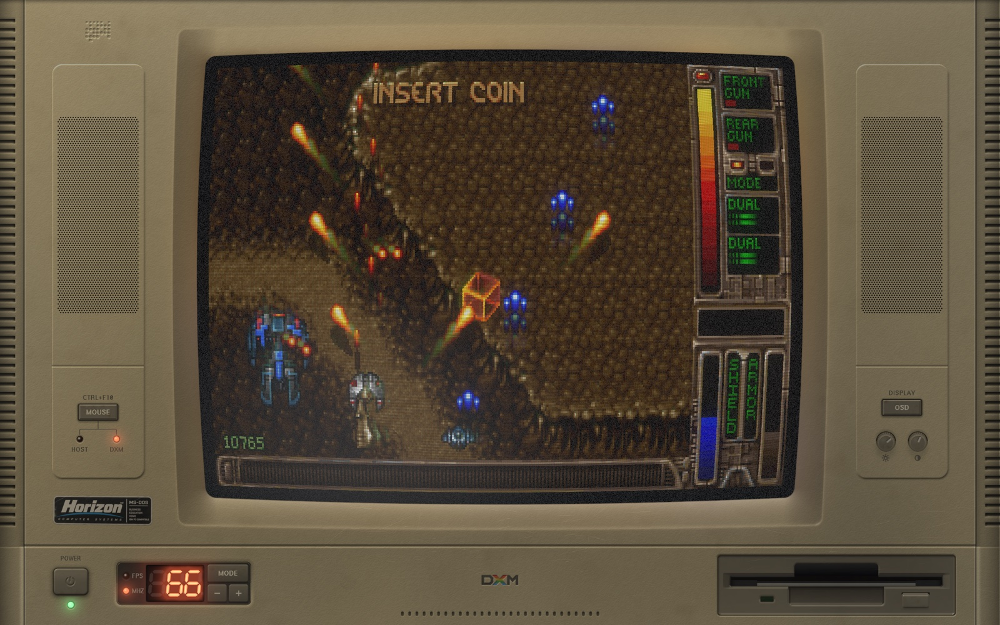
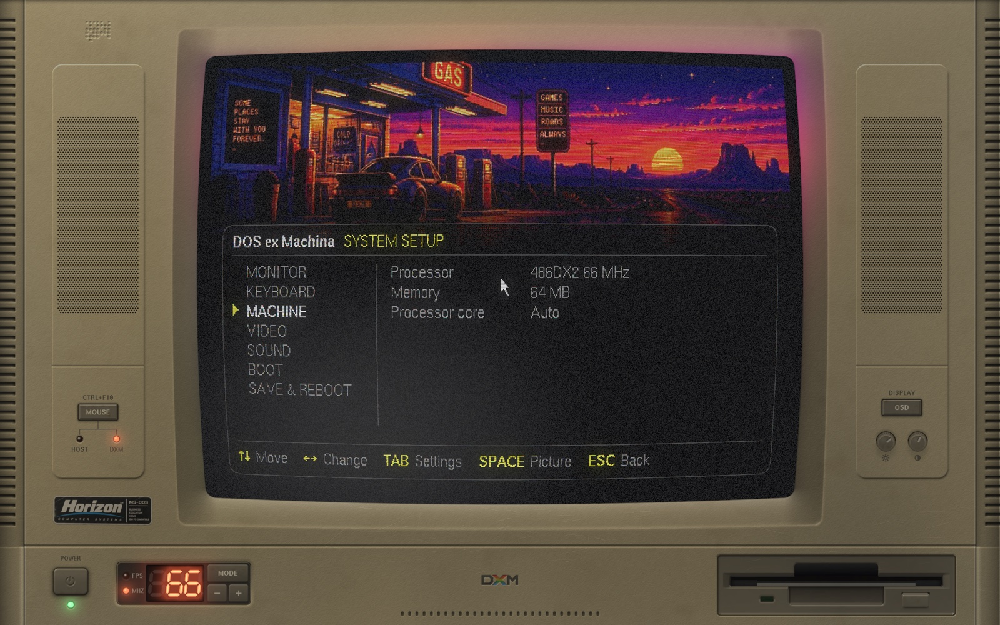
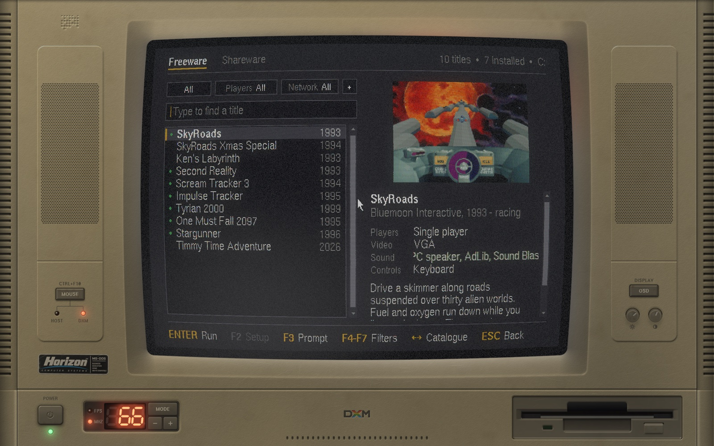
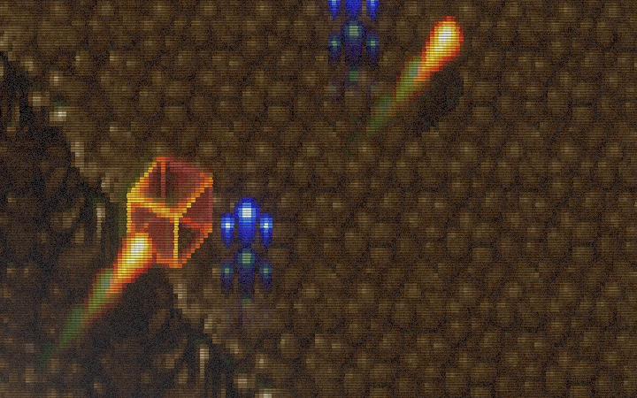
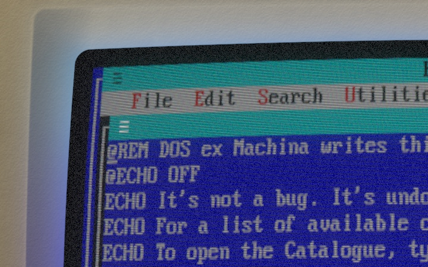
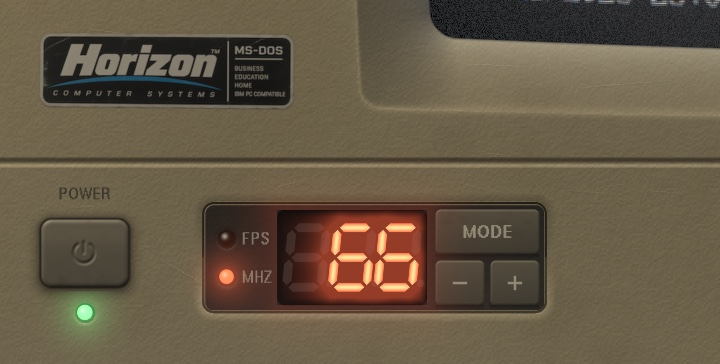

The PC you had in 1993. On the screen you have now.
DOS ex Machina draws a beige-box 486, case and CRT and all, and boots a real DOS inside it. It powers on, degausses, counts its memory, and lands at C:\>. Whatever you put on its C: drive runs behind the same glass.






Every control on the case works.
Give the mouse back to your desktop with Ctrl+F10 and the case is yours to operate: keys press in, knobs turn, the power switch switches. While the machine has the mouse it has your keyboard too, so your desktop's shortcuts stand down and every key reaches DOS.
Figure 1Front panel. Drawn at your display's resolution, from geometry and a lighting model: there is no photograph anywhere in it.
- The tubeA CRT with its own on-screen display, and a bezel whose dish takes the picture's light.
- SpeakersTwo moulded pods. What DOS plays, they play: Sound Blaster, AdLib, the PC speaker, and a Roland if you bring its ROMs.
- MOUSE key and lampsHOST or DXM: the lamps say who has the mouse. The key gives it to the machine; Ctrl+F10 takes it back.
- OSD keyThe monitor's menu, on the glass: picture, geometry and tube, three pages of it. Shift+F1 does the same.
- Brightness and contrastGrab a knob and drag. They turn, and the picture follows.
- PowerSwitches off properly: the raster collapses to a line, the line to a dot, the fans spin down, the room goes dark.
- Turbo displayThe clock in MHz. Minus and plus step the machine through ten processors; MODE shows frames per second instead.
- Floppy driveIt runs, and sounds, when a program loads.
- The maker's badgeHorizon Computer Systems never existed. The sticker is a little sun-faded all the same, and half a degree off square.
Nothing here is a photograph.
The case is solved, not painted: moulding partings, speaker pods, louvres and thirty years of wear come out of signed-distance geometry and a lighting model, at whatever resolution your display has. The picture goes through a real pipeline, the same one for the machine's own POST and for DOS, which is why the handover between them is invisible.

The picture, pixel for pixel
Scanlines integrated over each pixel's footprint, an aperture-grille mask locked to the source grid, persistence, and bloom where the beam is hot.

Light on the plastic
The bezel's dish faces the glass, so it takes the picture's colour. A blue screen makes a blue room. The edge of the glass is antialiased along the barrel's curve.

Parts, not pixels
The turbo display bakes its unlit segments into the case and lights the rest in the shader. The power cap throws a shadow that draws in when you press it.
- SignalDOSBox's frame, or the machine's own text screen
- PersistencePhosphor that takes a moment to let go
- DeflectionBarrel curvature, jitter, sync drift
- Beam and maskScanlines and an aperture grille
- BloomLight bleeding round what is bright
- GlassThe glass's own darkening toward its edges, and its sheen
- SpillThe picture's light on the case
Ten processors. Pick one.
The turbo display's minus and plus step through them, SETUP lists them by name, and the POST prints whichever you chose. The machine remembers it between runs. A game that paces itself by the clock plays the same on any of them; anything that runs flat out shows the difference.
| Processor | Clock | Cycles / ms | Relative |
|---|---|---|---|
| 486DX | 33 MHz | 10,000 | |
| 486DX | 40 MHz | 14,000 | |
| 486DX2 | 50 MHz | 20,000 | |
| 486DX2 | 66 MHz | 30,000 | |
| 486DX4 | 75 MHz | 40,000 | |
| Pentium-S | 100 MHz | 60,000 | |
| Pentium-S | 133 MHz | 100,000 | |
| Pentium-S | 166 MHz | 125,000 | |
| Pentium-MMX | 200 MHz | 150,000 | |
| Pentium-MMX | 233 MHz | 175,000 |
- Memory
- 4, 8, 16, 32 or 64 MB
- Video
- VGA and SVGA, and a 3dfx Voodoo with 4, 8 or 12 MB
- Sound
- Sound Blaster 16, AdLib, PC speaker; Roland MT-32 and SC-55 with your own ROMs
- Keyboard
- Yours. The machine reads your layout and gives DOS the matching one
- Drives
- C: is a folder on your disk. The catalogues mount as drives of their own
- DOS
- DOSBox Pure, built from a fork and carried inside
- Runs on
- macOS, Windows and Linux; x86_64 and arm64; OpenGL 3.3
- Licence
- GPL-2.0-or-later. Free software
Comes with no software. On purpose.
- Bring your own. C: is an ordinary folder. Put DOS programs in it, as folders, the way they sat on a hard disk, and run them from the prompt. Nothing needs porting or patching.
- Or type
CATALOG. A shelf of freeware and shareware that its authors give away. The machine downloads each title from where they put it, checks it against a hash, and installs it. It carries none of it itself. - It's a PC. Trackers, editors, demos, compilers. If it ran on a 486 with a VGA card, it has a fair chance here.
Figure 2CATALOG. Just type to find a title; Enter installs it, or runs it once it is there.
Free, and yours to take apart.
There is no release to download yet. Until there is, building it is four commands and a few minutes.
Build it from source
You need SDL3, a C and a C++ compiler, GNU make, libcurl and zlib.
git clone --recursive https://github.com/pedrocatalao/dos-ex-machina
cmake -S dos-ex-machina -B build -DCMAKE_BUILD_TYPE=Release
cmake --build build -j8
./build/dxmThe DOSBox core is a submodule and builds with everything else. BUILDING.md has the options, the tests, and what to do where SDL3 is not packaged yet.
Before you ask.
The User's Guide has the long answers: the C: drive, every control, SETUP, CATALOG, the OSD, MIDI, and the command-line flags.
Is this an emulator?
The emulating is DOSBox Pure's. DOS ex Machina is the machine it runs in: the case, the tube, the drive that spins, the power switch, and the BIOS that hands over to it.
Why not just use DOSBox?
You can, and it's excellent. This is for when you want the computer as well as the program: the wait while it counts its memory, the glow on the desk, the knob you turn.
Will my system warn me about it?
Once releases exist, yes, the first time. The builds are not code-signed yet, so macOS and Windows each ask before running them. The guide shows the way through.
Does it need a fast computer?
It needs a GPU with OpenGL 3.3. Most virtual machines don't offer one. The top processors want DOSBox's dynamic core, which it uses wherever your system allows it.
Who is Horizon Computer Systems?
Nobody. The badge on the case needed a maker, and a 1993 PC without a slightly optimistic brand name would not be a 1993 PC.
There was an older version?
An earlier incarnation ran natively ported games behind a simulated prompt. That code lives on the legacy branch. This one runs the real thing.